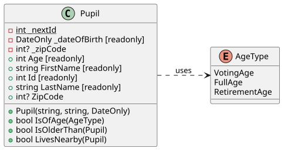
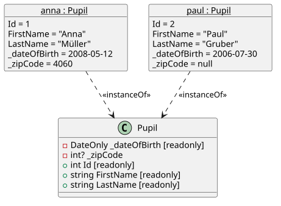
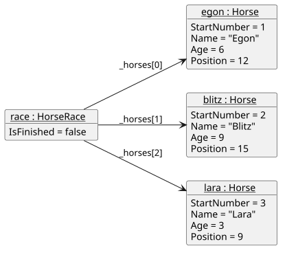

8 UML Class and Object Diagrams
UML (Unified Modeling Language) is a standardized set of diagram types for describing software design independently of any programming language. The class diagram is UML’s diagram for static structure: it shows the classes in a system, their members (fields, properties, methods), and how classes relate to one another — without any of the runtime behavior or control flow.
PlantUML is a text-based way to author UML diagrams: you write the diagram as plain text (@startuml … @enduml), and a renderer turns it into an image. See the class diagram and object diagram syntax references for the full notation.
This chapter covers two UML diagram types: class diagrams show the blueprint of the classes, object diagrams show the objects that exist at one moment while the program runs.
8.1 Class Diagrams
Class diagrams matter in software development because they let you communicate and review a design before (or without) reading all the code: given a class’s public members and its relationships to other classes, another developer can understand what it’s responsible for and how to use it.
8.1.1 Class Diagram Notation
| Symbol | Meaning | Rendered As |
|---|---|---|
+ |
public member |
green circle icon before the member |
- |
private member |
red square icon before the member |
{static} (prefix) |
static member |
member name shown underlined |
type name |
field or property | plain attribute line, e.g. - int age |
returnType name(params) |
method | plain line with the visibility icon, e.g. + bool isOfAge(AgeType) |
enum Name { ... } |
an enum |
its own box, marked with an enum icon/<<Enumeration>> label, listing values |
..> |
dependency (“uses”) | dashed line with an open (unfilled) arrowhead |
PlantUML has no built-in symbol for readonly or a private setter, so this repo’s diagrams add a bracketed suffix as a plain-text convention — PlantUML just prints whatever text follows a member, so this isn’t parsed as anything special, just displayed:
| Suffix | Meaning | Rendered As |
|---|---|---|
[const] |
compile-time constant | literal trailing text — no icon or styling of its own |
[readonly] |
no public setter at all | literal trailing text — no icon or styling of its own |
[private set] |
public getter, but the setter is private |
literal trailing text — no icon or styling of its own |
8.1.2 Illustration: the Pupil Class

Same diagram, as plain text (for reference — this block isn’t rendered):
@startuml
left to right direction
enum AgeType {
VotingAge
FullAge
RetirementAge
}
class Pupil {
{static} -int _nextId
-DateOnly _dateOfBirth [readonly]
-int? _zipCode
+Pupil(string, string, DateOnly)
+int Age [readonly]
+string FirstName [readonly]
+int Id [readonly]
+string LastName [readonly]
+int? ZipCode
+bool IsOfAge(AgeType)
+bool IsOlderThan(Pupil)
+bool LivesNearby(Pupil)
}
Pupil ..> AgeType : uses
@enduml8.2 Object Diagrams
A class diagram shows the blueprint: which data and methods every object of a class has. An object diagram shows what exists at one particular moment while the program runs: the concrete objects, the values of their data, and which objects refer to which. You can think of it as a snapshot of the heap.
Object diagrams matter because many bugs are not about what a class looks like, but about which objects exist at runtime and how they are connected: drawing the objects step by step lets you follow a program the way you did desk checks in the first year, and see mistakes such as a missing object or a reference to the wrong one.
An object diagram differs from a class diagram in a few ways:
- Concrete values instead of types: a class diagram says
+string FirstName, an object diagram saysFirstName = "Anna". All data of the object is shown, includingprivatefields, because it all belongs to the object’s state. - No methods: all objects of a class have the same methods, so they would add nothing to the snapshot.
- No
staticfields: they belong to the class, not to an object.Pupil._nextIdtherefore never appears in an object box. - Many boxes per class: there is one box per object, so a class can appear many times, or not at all if no object of it exists at that moment.
8.2.1 Object Diagram Notation
| Symbol | Meaning | Rendered As |
|---|---|---|
object "name : Class" as alias |
an object named name of class Class |
a box with name : Class as heading |
__text__ |
underlined text | UML underlines object headings to tell them apart from classes |
": Class" (no name) |
an anonymous object | heading shows only : Class, e.g. an array element |
name = value |
current value of a field or property | plain line in the box, e.g. ZipCode = 4060 |
a --> b : label |
link: a holds a reference to b |
solid arrow, labeled with the field that holds the reference |
allowmixing |
classes and objects in the same diagram | lets class boxes appear next to object boxes |
a ..> Class : <<instanceOf>> |
a is an instance of Class |
dashed arrow labeled «instanceOf» |
The alias is only used inside the PlantUML text to draw links (anna, race). It is not shown in the diagram.
8.2.2 Illustration: Two Pupil Objects
The two pupils from the chapter Classes and Objects as an object diagram. Each object has its own values, and both are instances of the same class. paul was created without a ZIP code, so his _zipCode is null.

Same diagram, as plain text (for reference — this block isn’t rendered):
@startuml
allowmixing
class Pupil {
-DateOnly _dateOfBirth [readonly]
-int? _zipCode
+int Id [readonly]
+string FirstName [readonly]
+string LastName [readonly]
}
object "__anna : Pupil__" as anna {
Id = 1
FirstName = "Anna"
LastName = "Müller"
_dateOfBirth = 2008-05-12
_zipCode = 4060
}
object "__paul : Pupil__" as paul {
Id = 2
FirstName = "Paul"
LastName = "Gruber"
_dateOfBirth = 2006-07-30
_zipCode = null
}
anna ..> Pupil : <<instanceOf>>
paul ..> Pupil : <<instanceOf>>
@enduml8.2.3 Illustration: Objects That Refer to Each Other
Object diagrams really pay off when objects hold references to other objects. In the 03-HorseRace exercise, a HorseRace object keeps its horses in the array _horses. This snapshot shows a race with three horses in the middle of a run:

Each arrow is one element of the array: _horses[0] holds a reference to egon, and so on. The horses themselves don’t know the race, so there are no arrows back. After the next MoveHorses() call, the Position values change, but the arrows stay the same. A second snapshot would show exactly that.
Check your understanding of this chapter with the UML Class and Object Diagrams Self-Check Quiz.